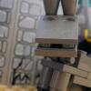
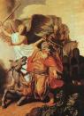
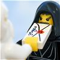

|
|
|
Numbers 22 |
|
| 22:1
And the children of Israel set forward, and pitched in the plains of Moab
on this side Jordan by Jericho. |

Balaam's Talking Donkey
|
| 22:2
And Balak the son of Zippor saw all that Israel had done to the Amorites.
|
| 22:3
And Moab was sore afraid of the people, because they were many: and Moab
was distressed because of the children of Israel.
|
| 22:4
And Moab said unto the elders of Midian, Now shall this company lick up
all that are round about us, as the ox licketh up the grass of the field.
And Balak the son of Zippor was king of the Moabites at that time. |
Balaam
Rembrandt (1626)
|
| 22:5
He sent messengers therefore unto Balaam the son of Beor to Pethor, which
is by the river of the land of the children of his people, to call him,
saying, Behold, there is a people come out from Egypt: behold, they cover
the face of the earth, and they abide over against me:
|
| 22:6
Come now therefore, I pray thee, curse me this people; for they are too
mighty for me: peradventure I shall prevail, that we may smite them, and
that I may drive them out of the land: for I wot that he whom thou blessest
is blessed, and he whom thou cursest is cursed.
|
| 22:7
And the elders of Moab and the elders of Midian departed with the rewards
of divination in their hand; and they came unto Balaam, and spake unto him
the words of Balak. |
|
| 22:8
And he said unto them, Lodge here this night, and I will bring you word
again, as the LORD shall speak unto me: and the princes of Moab abode with
Balaam. |
|
| 22:9
And God came unto
Balaam, and said, What men are these with thee? |

 (22:9) "And God came unto Balaam, and said, What men are these with thee?"
(22:9) "And God came unto Balaam, and said, What men are these with thee?"
God asks Balaam the non-rhetorical question,
"What men are these with thee?" You'd
think God would already know, wouldn't you?
Does God know everything?
|
| 22:10
And Balaam said unto God, Balak the son of Zippor, king of Moab, hath sent
unto me, saying,
|
| 22:11
Behold, there is a people come out of Egypt, which covereth the face of
the earth: come now, curse me them; peradventure I shall be able to overcome
them, and drive them out.
|
| 22:12
And God said unto Balaam, Thou shalt not go with them; thou shalt not
curse the people: for they are blessed. |
|
| 22:13
And Balaam rose up in the morning, and said unto the princes of Balak, Get
you into your land: for the LORD refuseth to give me leave to go with you. |
|
| 22:14
And the princes of Moab rose up, and they went unto Balak, and said,
Balaam refuseth to come with us. |
|
| 22:15
And Balak sent yet again princes, more, and more honourable than they. |
|
| 22:16
And they came to Balaam, and said to him, Thus saith Balak the son of
Zippor, Let nothing, I pray thee, hinder thee from coming unto me: |
|
| 22:17
For I will promote thee unto very great honour, and I will do whatsoever
thou sayest unto me: come therefore, I pray thee, curse me this people. |
|
| 22:18
And Balaam answered and said unto the servants of Balak, If Balak would
give me his house full of silver and gold, I cannot go beyond the word of
the LORD my God, to do less or more. |
 (22:20-22) God says to Balaam, "If men come to
call thee, rise up, and go with them." Men come, and Balaam goes with them,
just as God had commanded. "And God's anger was kindled because he
went" -- but he was just following God's instructions! (22:20-22) God says to Balaam, "If men come to
call thee, rise up, and go with them." Men come, and Balaam goes with them,
just as God had commanded. "And God's anger was kindled because he
went" -- but he was just following God's instructions!
(20:20) "God came unto Balaam at night, and said unto him,
If the men come to call thee, rise up, and go with them."
(20:21) "And Balaam rose up in the morning, and saddled his ass, and went with
the princes of Moab."
(20:22) "And God's anger was kindled because he went."
(22:23) "And the ass saw the angel of the LORD."
|
| 22:19
Now therefore, I pray you, tarry ye also here this night, that I may know
what the LORD will say unto me more.
|
| 22:20
And God came unto
Balaam at night, and said unto him, If the men come to call thee, rise up,
and go with them; but yet the word which I shall say unto thee, that
shalt thou do.
|
| 22:21
And Balaam rose up in
the morning, and saddled his ass, and went with the princes of Moab.
|
| 22:22
And God's anger was
kindled because he went: and the angel of the LORD stood in the way for
an adversary against him. Now he was riding upon his ass, and his two
servants were with him.
|
| 22:23
And the ass saw the angel of the LORD standing in the way, and his sword
drawn in his hand: and the ass turned aside out of the way, and went into
the field: and Balaam smote the ass, to turn her into the way.
|
| 22:24
But the angel of the LORD stood in a path of the vineyards, a wall being
on this side, and a wall on that side. |
|
| 22:25
And when the ass saw the angel of the LORD, she thrust herself unto the
wall, and crushed Balaam's foot against the wall: and he smote her again. |
|
| 22:26
And the angel of the LORD went further, and stood in a narrow place, where
was no way to turn either to the right hand or to the left. |
(22:28-30)
Balaam's talking donkey
Balaam and his donkey have a nice little chat. Apparently, they do this often, since Balaam isn't
the least bit surprised when his donkey starts talking to him.
(22:28) "The LORD opened
the mouth of the ass, and she said unto Balaam, What have I done unto
thee, that thou hast smitten me these three times?"
(22:29) "And Balaam said unto the ass, Because thou hast mocked me:
I would there were a sword in mine hand, for now would I kill thee."
(22:30) "And the ass said unto Balaam, Am not I thine ass, upon which
thou hast ridden ever since I was thine unto this day?
was I ever wont to do so unto thee? And he said, Nay."
(22:31) "Then the LORD opened the eyes of Balaam, and he saw the angel of the LORD
standing in the way, and his sword drawn in his hand: and he ... fell flat on his face."
(FOF)
|
| 22:27
And when the ass saw the angel of the LORD, she fell down under Balaam:
and Balaam's anger was kindled, and he smote the ass with a staff.
|
| 22:28
And the LORD opened
the mouth of the ass, and she said unto Balaam, What have I done unto
thee, that thou hast smitten me these three times?
|
| 22:29
And Balaam said
unto the ass, Because thou hast mocked me: I would there were a sword in
mine hand, for now would I kill thee.
|
| 22:30
And the ass said
unto Balaam, Am not I thine ass, upon which thou hast ridden ever since
I was thine unto this day? was I ever wont to do so unto thee? And he said,
Nay.
|
| 22:31
Then the LORD opened the eyes of Balaam, and he saw the angel of the LORD
standing in the way, and his sword drawn in his hand: and he bowed down his
head, and fell flat on his face.
|
| 22:32
And the angel of the LORD said unto him, Wherefore hast thou smitten thine
ass these three times? behold, I went out to withstand thee, because thy way
is perverse before me:
|
| 22:33
And the ass saw me, and turned from me these three times: unless she had
turned from me, surely now also I had slain thee, and saved her alive. |
|
| 22:34
And Balaam said unto the angel of the LORD, I have sinned; for I knew not
that thou stoodest in the way against me: now therefore, if it displease
thee, I will get me back again. |
|
| 22:35
And the angel of the LORD said unto Balaam, Go with the men: but only the
word that I shall speak unto thee, that thou shalt speak. So Balaam went
with the princes of Balak. |
|
| 22:36
And when Balak heard that Balaam was come, he went out to meet him unto a
city of Moab, which is in the border of Arnon, which is in the utmost coast. |

Balaam's Curse
|
| 22:37
And Balak said unto Balaam, Did I not earnestly send unto thee to call
thee? wherefore camest thou not unto me? am I not able indeed to promote
thee to honour?
|
| 22:38
And Balaam said unto Balak, Lo, I am come unto thee: have I now any power
at all to say any thing? the word that God putteth in my mouth, that shall I
speak. |
|
| 22:39
And Balaam went with Balak, and they came unto Kirjathhuzoth. |
|
| 22:40
And Balak offered oxen and sheep, and sent to Balaam, and to the princes
that were with him. |
|
| 22:41
And it came to pass on the morrow, that Balak took Balaam, and brought him
up into the high places of Baal, that thence he might see the utmost part of
the people. |
|
|


{kind=link}